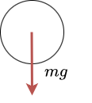
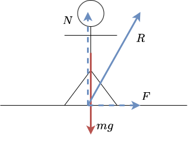
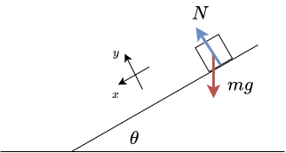
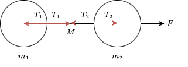
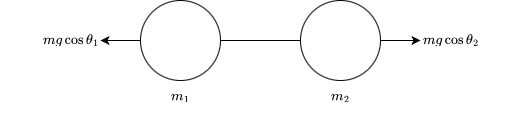
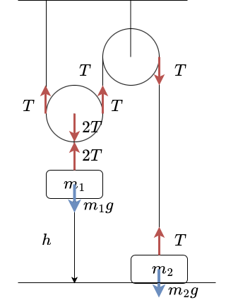
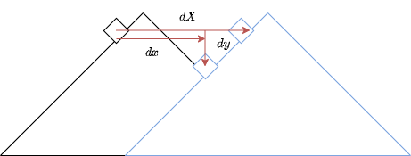
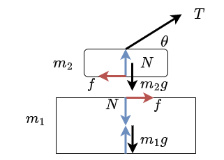
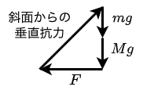

3 ニュートンの法則
\(\require{physics}\) これまでの章で皆さんが学んだ内容は運動学と呼ばれますが、運動学は物体の動き方（速度と加速度）を説明する学問です。
これから皆さんが学ぶことになる力学は、力が物体や系の運動にどのように影響するかを研究する学問となります。力学の基礎は、アイザック・ニュートンによって法則としてまとめ上げられました。この法則は非常にシンプルなのにも関わらず、自然界をかなりの精度と範囲で記述することができています。また，この法則は、地球のみならず，惑星の動きなど，宇宙空間の状況に適用されるという点で、普遍的な法則でもあります。
ニュートンの法則の発見は、ルネサンスから近代へと時代を変え，２０世紀初頭の現代物理学の登場までこの宇宙の須くを記述し切れるものだと考えられました．ただし，現代でも \(10^{-8}\) m以下の世界を除けば，ニュートンの法則はかなりの精度をもって自然を記述することができます．また，逆にこの制約がニュートン力学の領域を定義することにもなります。20世紀初頭、アルベルト・アインシュタインは相対性理論を提唱し、他の多くの科学者と共に量子力学を発展させていきました。ゆくゆくはその領域にも話を進めるつもりでいますが，今の所はニュートン力学の理解を進めていきましょう．
力学とは、物体や系の動きを引き起こす力についての学問です。このことを理解するためには、力の定義が必要です。力の直感的な定義ですが，まず手始めには「押す」や「引く」といったものとして考えてみましょう．台車を手のひらで押すとその感触がして，台車が動き始める．その感触を定義とするわけです．ここで，「押す」や「引く」には，向きと大きさが存在するわけで，ゆえにこれを記述するにはベクトルを使うことになります．
もう少しこの直感に力の定義に従って自然界を観察してみることにしましょう．まず，私たちが実際に感じられる力のうちの一つが，重力であることは言うまでもないでしょう．では，重力の持つ特徴とはなんだったのでしょうか．ものを動かすこと？ では，ものを動かすとはどう言う意味でしょうか．物体の座標を変化させること？ では，それはどのようにでしょうか．
落下運動を深く観察してやると，物体に一定の速度を持たせる，と言うのではなく，物体に一定の割合で速度を与えているとわかります．これは実験的事実であり，同時に前の章で私たちはすでに重力加速度として実際に問題を解いていたりもしました．
では，この洞察を次のようにまとめることはできないでしょうか．
では，この関係性はどのようになっているのでしょうか．つまり物体に働く力を \(\boldsymbol{F}\) ，物体の位置を \(\boldsymbol{r}\) として， \[\begin{align*} \boldsymbol{F} = f(\ddot{\boldsymbol{r}}) \end{align*}\] と言う関数 \(f\) が存在すると言うことである．この関数の形を知ることができれば，私たちは力学の根本の大きな部分を理解することになるのですが，これについては偉大なる先人たちが導き出してくれました．なんとこの関数は一次関数だったのです．そして，その比例係数の逆数を，質量と呼ぶようになりました．
ここで，\[m\ddot{\boldsymbol{r}}=\boldsymbol{F},\;\boldsymbol{F}=m\ddot{\boldsymbol{r}}\] どちらがいいのかとか言う問題には立ち入らないことにします．式の順番に意義があると思われる方は自らの信念に従っていただければ嬉しいです．例えば次のような簡単な例を考えてみましょう．

重力のみが働く小球を考えた時，鉛直下向き方向の運動方程式は，加速度を \(a\) とした時，
\[\begin{align*} ma&=mg\\ a&=g \end{align*}\]
というように，前の章で練習した内容と矛盾のない結果になるわけです．
では，運動方程式から推察できる簡単な事実を考えましょう．すなわち，力の働いていない物体はどのような運動をするのか，です．これは非常に簡単で \(m\ddot{\boldsymbol{r}}=\boldsymbol{0},\;\dot{\boldsymbol{r}}=(\text{一定})\) と言う非常にシンプルな結果となるわけです．つまり，次のようにまとめられるわけです．
そして最後に，力の持つ性質を述べようと思います．それは，作用反作用の法則と呼ばれるものです．
つまり，地球があなたを引っ張っているのと同じくらい，あなたは地球を引っ張っているのです．非常に非直感的な法則です．同時に，壁があなたに押されていると同じくらい，あなたは壁に押されるというのも同じ作用反作用の法則です．こちらは直感的ですね．
では，具体的にはどのような力があるのでしょうか．ニュートンの発展させた古典力学という世界では，力は2種類のみです．それは，万有引力と，電磁気力です．高校で学ばれる物理の世界は，最後に学ぶ原子範囲を除き，須くこの二つの力を持ってして語り尽くされる世界で，これ以外に起因する力は一切存在し得ません．非常にシンプルですね．ただ，その力の表し方は一癖も二癖もあり，学ぶ人にとって少し難しく感じられることもあるかもしれません．
まず，重力について話をしていきましょう．重力とは，地球上の物体が地球から受ける万有引力のことです．重力の大きさは地表においてはほぼ変わらず，質量に比例した値になり，その比例係数を重力加速度といいました．ここで重要なのは，ほぼ変わらないということであり，実際には場所によって少しずつ異なる値をとります．それはなぜかという理論については，ひとまずのところ置いておいて議論を進めることになります．後々，また学ぶことになります．
次に話を避けて通れないのが，電磁気学です．電磁気学の具体的な様相についてはそれなりに高度な数学も必要で，今現状ではやらないことにしますが，少なくとも今のうちに語らなければならないことは語り尽くすことにしましょう．
我々を含む，すべての物体を，原子と呼ばれる非常に小さな粒が構成しているところは，皆さんが小中学校を通して学んだ通りであり，またその原子は中心に＋に帯電した原子核，その周りにーに帯電した電子で出来上がっています．そして，その＋とーは引きつけ合う性質があります．同時に，＋同士やー同士では反発する性質があります．また，その力は距離が小さくなるほどに大きくなるという性質も持っています．
”塊”になっている物体内では，＋とーがいい具合のバランスで固まっているのは高等学校の化学で学んだ通りであり，それらを共有結合やイオン結合などと呼んでいました．では，別々の”塊”ではどうなっているのでしょうか．それは，電子同士が非常に近い距離にまで近づき，その結果非常に大きいな反発力が働くようになるわけです．そのおかげで，私たちは，床に対して反発して立つことができるのです．そしてその，物体と物体が一体にならないように，別々の”塊”として独立して存在するように反発しあう力のことを反発力と言います．
このアイデアを次の状態で理解することにしましょう．

地面に立っている人間を考えてみましょう．この人間に働く力は基本的に２種類しかなく，それは万有引力と電磁気力です．まず，地球からの万有引力である重力の \(mg\) があり，次に足と地面との距離が十分小さいために起きる電磁気力である反発力 \(R\) があります．この時， \(R\) がどのような値を取るのかというのは，この時点ではまだわかりません．なぜなら，地面と人間の足の境界には \(10^{23}\) 個程度以上の原子の周りの電子が複雑に運動しており，その様相を語り尽くすことはとてもじゃないができないからです．ですが，この人間が加速度を持っていないという前提をつけてあげることによって \(R\) の特定ができるわけです．問題を解決しやすくするために図のように \(R\) を \(N,F\) に分解して，それぞれの方向に対して運動方程式を立ててやることによって
\[\begin{align*} 0&=mg-N\\ 0&=F \end{align*}\]
とのように，確定させることができるわけです．ここで， \(N,F\) のことをそれぞれ垂直抗力，および，摩擦力と呼ばれます．
初学者にありがちなミスとして， \(mg\) があるから反発力があって \(N=mg\) だと反射的に決めつけてしまうことがありますが，それは人が加速していない時に限るわけです．注意しましょう．
では，これらの法則を実際にどのようにして問題に応用するべきでしょうか．これからは実際に問題を解いていくことによって，それらを明らかにしていこうと思います．
解答

物体と紐それぞれに対して運動方程式を立ててやると次のようになる．
\[\begin{align*} m\ddot{x} &= mg \sin \theta \\ m\ddot{y} &= -mg \cos \theta + N \end{align*}\]
ここで，坂自体は形を変えてしまわないので， \(y=0\) といえて，このような，運動の様相を縛る条件を束縛条件と呼ぶ．両辺を微分することによって \(\ddot{y}=0\) となる．
\[\begin{align*} \ddot{x} &= g \sin \theta \\ N &= mg \cos \theta \end{align*}\]
故に加速度の大きさは \(\sqrt{\ddot{x}^2+\ddot{y}^2}=g \sin \theta\) で，方向は坂道の滑り落ちる方向である．
ニュートンの運動の法則は粒子に対して成り立つものであり，残念ながらある程度以上の粒子が集まっている「物体」については説明されていません．ですが，それでも，運動方程式から得られる情報はたくさんあります．例えば，とある場所に \(n\) 個の粒子があり，それらが互いに力を及ぼしながら，外からも力を受けているとしましょう．その時， \(i\) 番目の粒子の運動方程式は
\[\begin{align*} m_i\ddot{\boldsymbol{r}_i} = \sum_j \boldsymbol{F}_{ij} + \boldsymbol{F}_{i\text{out}} \end{align*}\] ここで， \(\boldsymbol{F}_{ij}\) は \(j\) 番目の粒子が \(i\) 番目の粒子に及ぼす力であり， \(\boldsymbol{F}_{i\text{out}}\) は \(i\) 番目の粒子が受ける外力です．
この \(n\) 元微分方程式を解き切ることは絶望的に難しいのは簡単にわかるでしょう．ですが，全ての方程式を足し合わせることによって， \[\begin{align*} \sum_i m_i\ddot{\boldsymbol{r}_i} = \sum_i\sum_j \boldsymbol{F}_{ij} + \sum_i\boldsymbol{F}_{i\text{out}} \end{align*}\] ここで，作用反作用の法則を考えれば， \(\sum_i\sum_j \boldsymbol{F}_{ij}=\boldsymbol{0}\) なので， \[\begin{align*} M_{\text{tot}}&=\sum_i m_i \\ \boldsymbol{r}_\text{G}&=\frac{\sum_i m_i\ddot{\boldsymbol{r}_i}}{M_{\text{tot}}} \end{align*}\] と，前半で前重力，後半で加重平均（重心）を定義してやれば， \[\begin{align*} M_{\text{tot}}\ddot{\boldsymbol{r}_\text{G}} = \sum_i\boldsymbol{F}_{i\text{out}} \end{align*}\] とすることができます．これは重心方程式と呼ばれており，先の問題のように大きな物体に対して，あたかも粒子ではない物体に対しても運動方程式が当てはまるように書いているのは，重心方程式を書いているに過ぎないわけです．
以上の作業をしてみることでわかることですが，実は何に注目して運動方程式を立てるべきか，という問題に対して，内力が全て打ち消しあって，一様な外力が働いている，任意の粒子の集合部分が答えになります．何を塊として，運動方程式を立てるか，それは問題を解く人が一番やりやすい方法を選べばいいというわけですね．
解答

作用反作用の法則によって張力を図のように \(T_1,\:T_2\) と設定できる．物体それぞれに対して運動方程式を立ててやると次のようになる． \[\begin{align*} m_1a_1 &= T_1 \\ m_2a_2 &= F-T_2 \\ MA &= T_2-T_1 \end{align*}\] ここで，３つの物体が同時に動くので，次のような束縛条件が科される． \[\begin{align*} a_1=a_2=A \end{align*}\] 以上の条件で運動方程式を解いてしまうと \[\begin{align*} a_1=a_2=A=\frac{F}{m_1+m_2+M}\\ T_1=\frac{m_1}{m_1+m_2+M}F\\ T_2=\frac{m_1+M}{m_1+m_2+M}F \end{align*}\] ここで，紐の質量を \(0\) にすることで， \[\begin{align*} T_1=T_2 \end{align*}\] という関係がわかる．この関係は，今後も使うので注意すべし．ただし，紐の質量が無視できる場合に限ることを注意せよ．
解答
\(m_1,m_2\) それぞれに働く張力の大きさを \(T_1,T_2\) とする．右側を正としてそれぞれの斜面に沿った加速度を \(a_1,a_2\) として，運動方程式を立てると \[\begin{align*} m_1a_1=T-m_1g\sin \theta_1\\ m_2a_2=m_2g\sin \theta_2-T \end{align*}\] 束縛条件は \[\begin{align*} a_1=a_2 \end{align*}\] 解いてやれば \[\begin{align*} a_1=a_2=\frac{-m_1\sin \theta_1+m_2\sin \theta_2}{m_1+m_2}g\\ T=\frac{m_1m_2}{m_1+m_2}(\sin \theta_1+\sin \theta_2)g \end{align*}\] とわかる．この問題については，脳内で次のように変換すると楽かもしれない． 
今までの問題でも扱ってきたのですが，束縛条件にフォーカスを当てたような問題をやってみましょう．
解答

作用反作用の法則によって張力を図のように $T $ と設定できる．滑車の運動方程式を考えれば，左の滑車下の張力は \(2T\) となる．下向きを正として物体それぞれに対して運動方程式を立ててやると次のようになる． \[\begin{align*} m_1\ddot{x_1} &= m_1g-2T \\ m_2\ddot{x_2} &= m_2g-T \end{align*}\] ここで，紐の長さが変わらないことから， \(m_1\) が下がった分だけ，その倍 \(m_2\) が上がるので \[\begin{align*} 2\dd x_1=-\dd x_2 \\ 2\ddot{x_1}+\ddot{x_2}=0 \end{align*}\] 以上の条件で運動方程式を解いてしまうと \[\begin{align*} \ddot{x_1}=\frac{m_1-2m_2}{m_1+4m_2}g \\ \ddot{x_2}=\frac{-2m_1+4m_2}{m_1+4m_2}g \\ T=\frac{3m_1m_2}{m_1+4m_2}g \end{align*}\]
解答
\(m_1,m_2\) に働く垂直抗力を \(N_1,N_2\) として，張力を \(T\) とする．また水平方向右を正とする \(x\) 軸，鉛直上方向を正とする \(y\) 軸を設定して運動方程式を立てる． \[\begin{align*} M\ddot{X}&=-N_2-T\\ m_1\ddot{x_1} &= T \\ N_1&=m_1g\\ m_2\ddot{x_2} &= N_2\\ m_2\ddot{y_2} &=T-m_2g \end{align*}\] また，束縛条件は \[\begin{align*} \ddot{X}&=\ddot{x_2}\\ \ddot{x_1}-\ddot{X}&=-\ddot{y_2} \end{align*}\] かなりの計算を経ることによって次のようになるとわかる． \[\begin{align*} T&=\left\{\frac{1}{M+m_2}+\frac{1}{m_1}+\frac{1}{m_2}\right\}^{-1}g\\ \ddot{X}=\ddot{x_2}&=\left\{\frac{1}{M+m_2}+\frac{1}{m_1}+\frac{1}{m_2}\right\}^{-1}\frac{g}{m_1}\\ \ddot{y_2}&=\left\{\frac{1}{M+m_2}+\frac{1}{m_1}+\frac{1}{m_2}\right\}^{-1}\frac{g}{m_2}-g \end{align*}\]
解答
張力を \(T\) とする．鉛直下方向を正として運動方程式を立てる． \[\begin{align*} m_1a_1&=m_1g-2T\\ m_2a_2&=m_2g-T\\ m_3a_3&=m_3g-T \end{align*}\] また，束縛条件は \[\begin{align*} \ddot{x_2}+\ddot{x_3}&=-2\ddot{x_1} \end{align*}\] かなりの計算を経ることによって次のようになるとわかる． \[\begin{align*} T=\left(\frac{4}{m_1}+\frac{1}{m_2}+\frac{1}{m_3}\right)^{-1}4g \end{align*}\]
解答

図のように考えれば \[\begin{align*} m\ddot{x}&=-N\sin\theta\\ m\ddot{y}&=mg+N\cos\theta\\ M\ddot{X}&=N\sin\theta \end{align*}\] また，束縛条件は \[\begin{align*} \ddot{y}=(\ddot{X}-\ddot{x})\tan\theta \end{align*}\] かなりの計算を経ることによって次のようになるとわかる． \[\begin{align*} N&=\frac{mg}{1+\frac{m}{M}\sin ^2 \theta}\cos \theta\\ \tan \phi = \frac{\ddot{y}}{\ddot{x}}&=-\left(1+\frac{m}{M}\right)\tan \theta \end{align*}\] ここで，なぜ答えの値はマイナスになっているかというと，上の図のように考えているからであって， \(\dd x\) が右向き正だからであり，左向き正であればプラスの値が答えになる．次に摩擦力について考えましょう．
物体と物体が”擦れる”際，その物体の動作を止めるような力が働くことは経験則で皆さん，わかることでしょう．ところが，摩擦の様相のメカニズムは非常に複雑です．すれ合う両物体の表面の原子配置は基本的に不規則であり，ある程度以上近づきあった原子同士が前に所属した物体に残留しないこともあり得るので，単純なモデル化は困難を極めます．以前は，この摩擦のメカニズムは非常に単純で，物体の表面は凹凸だらけで，その凹凸を乗り越えることで摩擦が発生すると考えられていましたが，凸凹を乗り越える際，凸凹が変形し，波動や原子運動が発生し，やがて熱が発生しますが，それでは単純な凹凸ではなく極めて複雑で時間と共に変化する凹凸を考えなくてはならなくなるのです．
ところが，摩擦力は，経験則から非常に単純な法則で近似することができます．すなわち，
\[\begin{align*} F=\mu N \end{align*}\]
ここで \(N\) は垂直抗力で， \(\mu\) は摩擦係数と呼ばれる定数です．この力の特徴としては， \(F=\mu N\) となる大きさまで物体は滑る方向に対しての力に対抗して動かずにいることができて，それ以上となると加速度を持って運動することになるというものです．また，その時，静止し続けられるまで耐えられる摩擦定数と，加速したのちの摩擦定数との値に違いがあり，前者を静止摩擦係数，後者と動摩擦係数と呼ばれます．
静止摩擦係数 \(\mu\) を測定したい場合，傾けた斜面に物体を乗せることによって簡単に計測することができます．すなわち，物体が運動しだす瞬間では
\[\begin{align*} N= mg\cos \theta \\ mg \sin \theta=\mu N \end{align*}\]
との式が成り立ち， \(\mu = \tan \theta\) と計測されるのです．動摩擦係数についても，斜面を滑り出した物体がどれほどの角度で初めてその運動を止めるかを調べることによって，同様に計測されることがわかるでしょう．
静止摩擦係数と動摩擦係数では，前者の方が大きい傾向にはあるが，乾いた金属などでは両者にほぼ差がないことがわかっています．
では，実際の問題で練習をしていきましょう．
解答
図のように考えれば \[\begin{align*} m_1a&=F-R_1-R_2\\ 0&=-m_1g+N_1-N_2\\ m_2a&=R_2\\ 0&=N_2-m_2g \end{align*}\] この時， \(R_1\) は動摩擦力なので \(R_1=\mu _1' N_1\) となる． \[\begin{align*} R_2&=\frac{m_1m_2}{m_1+m_2}\left\{\frac{F}{m_1}-\mu_1'\left(1+\frac{m_2}{m_1}\right)\right\} \\ a&=\frac{m_1}{m_1+m_2}\left\{\frac{F}{m_1}-\mu_1'\left(1+\frac{m_2}{m_1}\right)\right\} \end{align*}\] ここで同時に滑り出す条件とは \[\begin{align*} a&>0\\ R_2&<\mu_2N_2 \end{align*}\] であるので，それらを \(F\) についてまとめると次のようになる． \[\mu_1(m_1+m+2)g<F \leq (\mu_1'+\mu_2)(m_1+m_2)g\] また，ここまでの議論は \(R_2&<\mu_2N_2\) を使い，それまでは具体的に \(R_2\) を設定せずに進めたが， \(R_2=\nu_2 N_2\) などとおいて計算を進め，最終的に \(\nu_2<\mu_2\) とすることでも構わない．これからはどちらの方法も用いるので，混乱のないようにお願いしたい．
解答

図のように考えれば \[\begin{align*} N&=m_2g-T\sin\theta\\ m_1a_1&=f\\ m_2a_2&=T\cos\theta-f \end{align*}\] また，束縛条件は \[\begin{align*} a_1=a_2:=a \end{align*}\] 計算を経ることによって次のようになるとわかる． \[\begin{align*} a&=\frac{T}{m_1+m_2}\cos\theta\\ f&=\frac{m_1}{m_1+m_2}T\cos\theta \end{align*}\] 以上で問題1,2はは完了した．
3.ここで \(f<\mu_0 N\) が求める条件なので， \[\begin{align*} a\leq \frac{\mu_0m_2g}{m_1+\mu_0(m_1+m_2)\tan \theta} \end{align*}\] となる．
4.加速度が常に最大になるように動けばいいことは明らかである．つまり，速さ \(v_0\) に達するまで加速度 \(a_0\) で動き，その後は等速でゴールまで辿り着くということである．つまり \(v_0/a_0=t_0,\; 3v_0/2a_0 =t_1\) として(それぞれ，加速を止める時刻とゴールする時刻である)
\[\begin{align*} a=a_0,\;v=a_0t,\;s=\frac{1}{2}a_0t^2\;(0\leq t \leq t_0) \\ a=0,\;v=v_0,\;s=\frac{v_0^2}{2a_0} + v_0(t-t_0)\;(t_0\leq t \leq t_1) \end{align*}\]解答
斜面下向きに沿った座標軸を考え，物体の加速度を \(a\) ，物体同士に働く抗力の大きさを \(N\) ，とした時次のようになる． \[\begin{align*} m_1a&=m_1g\sin \theta -\mu_1m_1g\cos \theta +N\\ m_2a&=m_2g\sin \theta -\mu_1m_1g\cos \theta -N \end{align*}\] 連立方程式を解くことによって次のようになるとわかる． \[\begin{align*} a&=g\sin \theta - g \cos \theta \frac{\mu_1m_1+\mu_2m_2}{m_1+m_2} N&=\frac{m_1m_2}{m_1+m_2}(\mu_1-\mu_2)g\cos\theta \end{align*}\] ここで滑らないで済むということは \(a=0\) ということなので， \[\begin{align*} \tan \theta = \frac{\mu_1m_1+\mu_2m_2}{m_1+m_2} \end{align*}\] というのが滑らない限界の大きさの角である．解答
I

- 上図の通り， \(F=(m+M)g\)
- \(y=d\)
- \(m,\:M\) の加速度の大きさを \(a,\:A\) ，物体間の垂直抗力を \(N\) として運動方程式を立てれば次のようになる． \[\begin{align*} ma&=mg-N\\ MA&=\frac{Mg+N}{\sqrt{2}}\\ \sqrt{2}a&=A \end{align*}\] これを解いてやれば \[\begin{align*} a=\frac{m+M}{m+2M}g \end{align*}\] ここで，等加速度運動なので \[\begin{align*} v=\sqrt{2ad}=\sqrt{2gd\frac{M+m}{2M+m}} \end{align*}\]
Ⅱ
- 両物体の加速度を \(a\) として運動方程式を立てれば次のようになる． \[\begin{align*} (M+m)a=\frac{M+m}{\sqrt{2}}g\\ \end{align*}\] 以上から \[\begin{align*} a_x=a_y=\frac{1}{\sqrt{2}}a=\frac{1}{2}g \end{align*}\]
- 摩擦力と垂直抗力を \(R,\:N\) とすれば小物体の運動方程式は次のようになる． \[\begin{align*} ma_x&=R\\ ma_y&=mg-N \end{align*}\] 上の結果と合わせれば \(R/N=1=\mu_0\) とわかる．
- 点Pを境にその前では(ア)等加速度運動であり，その後は(イ)等速運動である．
解答
\[\begin{align*} m\ddot{x}&=mg-k\dot{x}\\ \dot{x} &= \frac{mg}{k}\left(1-e^{-\frac{k}{m}t}\right) \end{align*}\] 終端速度は \(mg/k\) である．